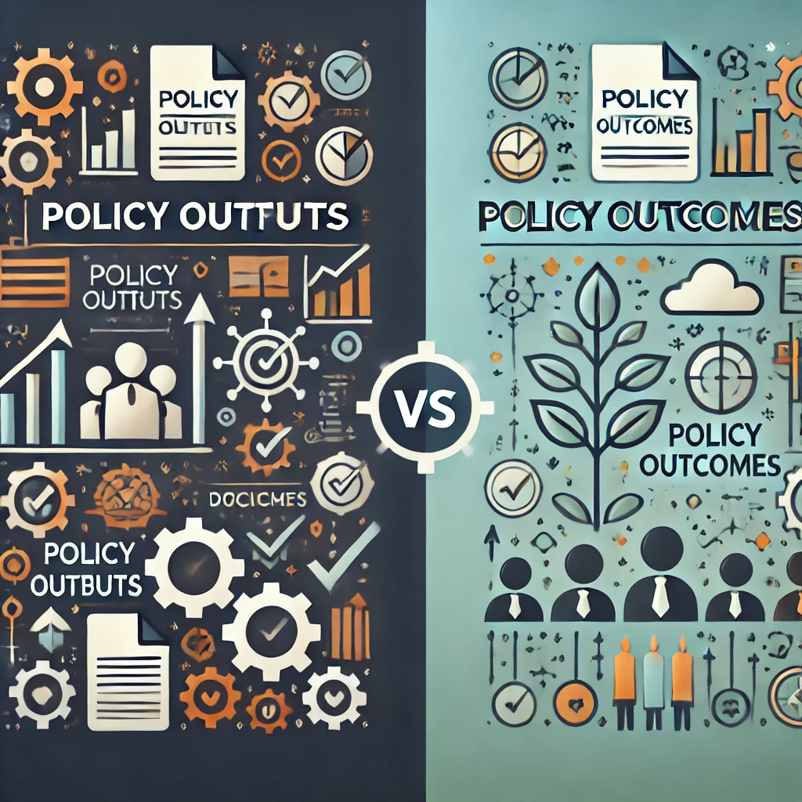
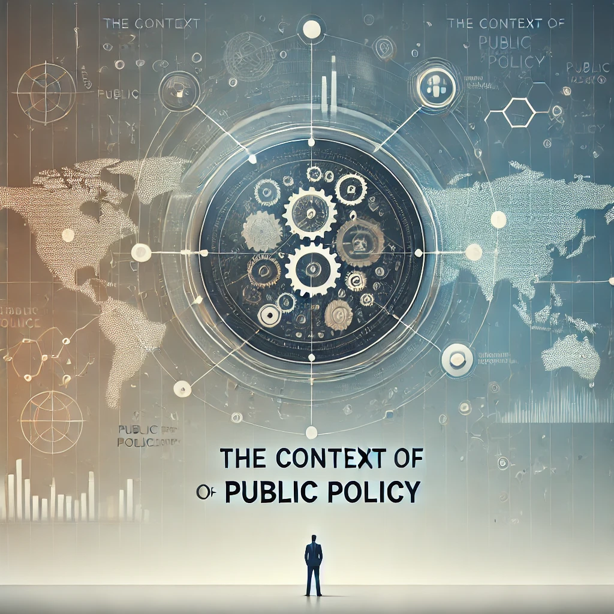
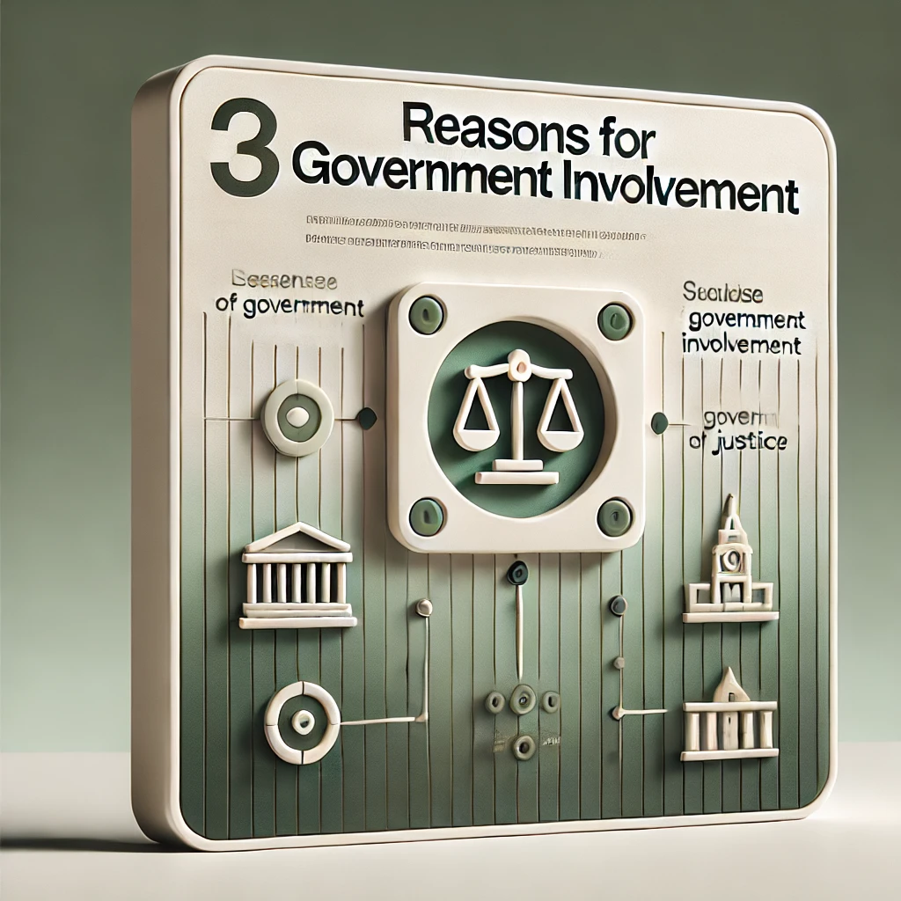
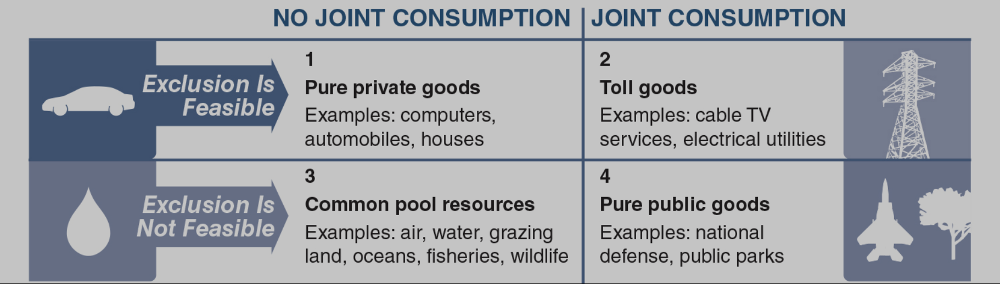
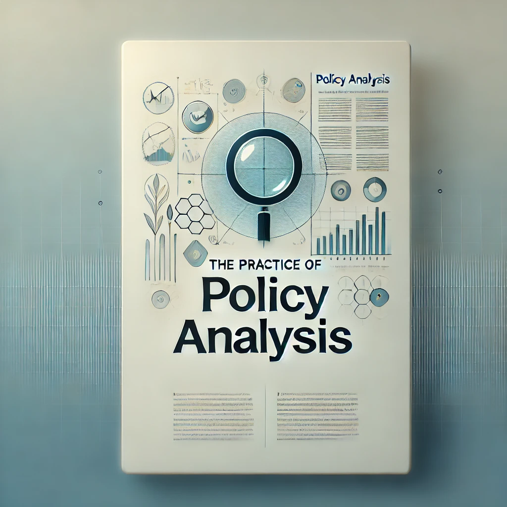

Public Policy is what officials within government,
and by extension the citizens they represent, choose to do or not to do
about public problems.
There’s no single definition of public policy. It’s
a complex and multifaceted concept that can be understood in many
ways.
Defining the Field(s) of
Policy Studies
Policy studies is an interdisciplinary field that
examines both the content and process of public policies.
Smith and Larimer emphasize that it encompasses multiple subfields:
Policy Analysis: Evaluates policy outcomes and
alternatives.
Policy Process: Studies how policies are formulated
and implemented.
Policy Advocacy and Governance: Examines the
influence of interest groups and governance structures.
These subfields are interconnected, reflecting the complexity of
real-world policy challenges.
Many different
ways to discuss public policy
Intentions: the purposes of government action
Goals: the stated ends to be achieved
Plans or proposals: the means to achieve the
goals
Programs: the authorized means for pursuing the
goals
Decisions or choices: specific actions that are
taken to set goals, develop plans, and implement programs
Policy Outputs and Outcomes
Policy Outputs: the formal actions that governments
take to pursue their goals
Policy Outcomes: the effects that result from
policy outputs

What’s the difference?
The Basics
Institutions: the rules, norms, and procedures that
structure the behavior of individuals and organizations.
Government: the institutions and political
processes through which public policy choices are made with legal
authority to govern or rule a group of people.
Government Institutions: the US Constitution,
Congress, the President, the Courts, the bureaucracy, and state and
local governments.
Federalism: the division of power between the
national government and state governments; the division of power and
authority on a geographic basis.
The Basics (cont.)
Politics: the process of making and implementing
decisions that apply to members of a group; concerns the exercise of
power and the resolution of conflicts.
Policy Making: the process by which authorities
decide which actions to take to address a problem or set of
problems.
Policy Analysis: the process of identifying and
evaluating policy options and their consequences.
The Context of Public
Policy

Policy Context
The Context of Public
Policy
The Social Context
Social Problems: conditions that are harmful to
individuals or society and that require collective action to
address.
Social Values: the beliefs that people hold about
what is good, right, and desirable.
Social Norms: the unwritten rules that guide
behavior in a society.
Social Changes: the transformations in society that
affect the way people live and work.
The Context of Public Policy
(cont.)
The Economic Context
Economic Problems: conditions that are harmful to
individuals or society and that require collective action to
address.
Economic Policy: the actions that governments take
to influence the economy, such as setting tax rates, spending money, and
regulating businesses.
The Context of Public
Policy (cont.)
The Political Context
Political Problems: conditions that are harmful to
individuals or society and that require collective action to
address.
Political Party System: the organization of
political parties and the competition between them.
Trust in Government: the belief that government
will act in the public interest.
Ideology: a set of beliefs about the proper role of
government in society.
The Context of Public
Policy (cont.)
The Governing Context
Complex Governance Structures: the overlapping and
interdependent relationships among government agencies, interest groups,
and other organizations.
Shared Responsibility: the idea that government,
the private sector, and civil society all have a role to play in
addressing public problems.
The Context of Public
Policy (cont.)
The Cultural Context
Political Culture: refers to widely held values,
beliefs, and attitudes, such as trust and confidence in government and
the political process, or the lack thereof.
Political Socialization: the process by which
individuals learn about politics and acquire political values and
beliefs.
Political Participation: the ways in which people
get involved in politics, such as voting, running for office, or joining
interest groups.
Cultural Differences: help to explain the wide
variation in state and local public policies.
Reasons for
Government Inolvement

Government Involvement
Reasons for Government
Inolvement
Political: shifts in public opinion; rise of social
movements
Moral or Ethical: action is the “right” thing to
do, even without public support
Economic: market failures; externalities; public
goods
Reasons for Government
Inolvement (cont.)
Economics and Market Failure
Market Systems and Government Intervention
In a pure capitalist or market system, government intervention is
often seen as a distortion of market efficiency.
Market Failure: Occurs when the private market is
not efficient, justifying government intervention.
Reasons for
Government Inolvement (cont.)
Economics and Market
Failure
Market Systems and Government Intervention
In a pure capitalist or market system, government intervention is
often seen as a distortion of market efficiency.
Market Failure: Occurs when the private market is
not efficient, justifying government intervention.
Types of Market Failures
Monopolies & Oligopolies: Occur when one or a
few companies dominate the market, controlling prices.
Externalities:
Negative Externality: Harm caused to a third party without
compensation.
Positive Externality: Benefit gained by a third party
without payment.
Reasons for
Government Inolvement (cont.)
Other Types of Market
Failures
Information Failure
Occurs when crucial information for buyers and sellers is incomplete
or not easily accessible.
Inability to Provide Public/Collective Goods
Public/Collective Goods: Defined by two criteria:
Exclusion: Ability to exclude someone from accessing the
good.
Joint Consumption: Ability for multiple people to consume
the good simultaneously.
Reasons for
Government Inolvement (cont.)
Other Types of Market
Failures
Information Failure
Occurs when crucial information for buyers and sellers is incomplete
or not easily accessible.
Inability to Provide Public/Collective Goods
Public/Collective Goods: Defined by two criteria:
Exclusion: Ability to exclude someone from accessing the
good.
Joint Consumption: Ability for multiple people to consume
the good simultaneously.
Reasons for
Government Inolvement (cont.)
Examples of Public Goods

Public Goods
The Practice of Policy
Analysis

Policy Analysis
The Practice of
Policy Analysis
Everyday Relevance:
Policy analysis isn’t just for specialists; we all use it in daily
decisions (e.g., buying a car, choosing a course).
The Practice of
Policy Analysis
Everyday Relevance:
Policy analysis isn’t just for specialists; we all use it in daily
decisions (e.g., buying a car, choosing a course).
Uses of Policy Analysis:
Formulating policies and evaluating programs.
Describing the scope of public problems.
Assessing the feasibility of policy choices.
Evaluating program effectiveness.
Providing a counterweight to partisan or ideological
decision-making.
The Practice of
Policy Analysis
Everyday Relevance:
Policy analysis isn’t just for specialists; we all use it in daily
decisions (e.g., buying a car, choosing a course).
Uses of Policy Analysis:
Formulating policies and evaluating programs.
Describing the scope of public problems.
Assessing the feasibility of policy choices.
Evaluating program effectiveness.
Providing a counterweight to partisan or ideological
decision-making.
Citizens and Policy Analysis:
Helps citizens and interest groups make informed decisions and
arguments.
Important for students to evaluate information critically.
Deciding
the Best Policy: Using Multiple Criteria
Key Criteria:
Effectiveness: Will the policy work?
Efficiency: What are the costs vs. benefits?
Equity: Is the policy fair?
Political Feasibility: Is the policy acceptable to
officials and actors?
Flexibility:
These criteria are not exhaustive—others may be relevant based on
the specific issue.
That’s all for today!
Discussion 1 Post due on Tuesday
Read Kraft & Furlong, Ch. 2 and Smith & Larimer, Ch. 3 for
Next Week